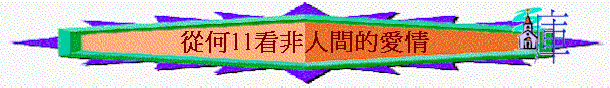

何11:9強調神並非世人，祂對人的愛並非與世人一樣，試想想，世人的愛有甚麼局限/不完美的地方
(每人分享一樣) ？
今日我們從何11看看非世人的神，祂如何愛選民
一.神對人的恩情
1.11:1題及「以色列年幼的時候」是指甚麼時候？他們當時在那裡？有甚麼苦況？召出「我的兒子」指甚麼
(可參考出4:22-23) ？
2.從神的選召與拯救，我們看到神如何愛以色列人？
3.當你想到神選召你及拯救你，你心中有甚麼體會/感動？
4.11:3題及「以法蓮」指誰？神拯救了選民後，是否將他們撇下，沒有養育他們？在11:3-4中如何描述神養育選民？用甚麼方法？
5.神用甚麼方法教導選民？「膀臂抱著」代表甚麼？「醫治他們」又指甚麼？
6.11:4題到「慈繩」「愛索」，與人一般用繩拖著牛與羊有甚麼不同之處？
7.「如人放鬆牛的兩腮夾板」昔日人為何將兩腮夾板放在牛中？神待我們如放鬆夾板代表甚麼？
8.想起神如此養育以色列人，你在世的父母有否如神一般如此養育你？
9.你有否感受到神也如此養育你？在11:3-4中，你最深刻是那句？為甚麼？
二.人的辜負
1.神如此愛選民，11:2題到選民有甚麼反應？
2.他們知否神如此養育他們，何以見得？
3.在11:7，他們又如何對待這位愛他們的神？
4.你若是父母，若是有如以色列特質的子女，你會有甚麼感覺？你將會怎對他們？
三.神的憐愛
1.11:8題及「憐愛」？何謂「憐愛」？
2.從11:8看到神如何憐愛選民？
3.押瑪、洗扁是甚麼地方 (申29:23)
？神沒有待選民如此二城，代表甚麼意思 (可參考11:9)
？
4.神不單沒有毁滅以色列，在11:10中更會作甚麼事情(可參看亞8:7-8)？
5.你從地上的父母中，有否體會神如此的憐愛？試分享
6.最後，神為何可以如此憐愛以色列
(何11:9) ？
總結：在這此查經中，你體會神如何愛人？
祈禱
參考大綱
辜負主恩仍憐愛（何１１：１－１１）
ａ．主的恩情
i．神愛之恩（ｖ１）
ii．拯救之恩 （ｖ１）
iii．養育之恩
（１）恆久的教導
「我原教導以法蓮行走．．．．」（ｖ３）
「先知越發招呼他們．．．．」（ｖ２）
（２）大能的保護
「．．．．用膀臂抱著他們．．．．」（ｖ３）
（３）特殊的牽引
「我用慈繩，愛索牽引他們．．．．」（ｖ４）
（４）主動的餵養
「．．．．我待他們如人放鬆牛的兩腮夾板，把食糧放在他們面前」（ｖ４）
ｂ．人的辜負
i．不知主恩（ｖ３）
ii．不理主言（ｖ2）
iii．不肯歸主（ｖ５，７）
ｃ．神的憐愛
i．憐愛的特點
（１）不捨棄的愛（ｖ８）
（２）有包容的愛（ｖ８－９）
（３）不保留的愛（ｖ８）
（４）有行動的愛（ｖ１０－１１）
ii．仍愛的原因
（１）神的超越性（ｖ９）[非人間]
（２）愛的非理性（ｖ１）
（３）選民的優越性（ｖ１，９）